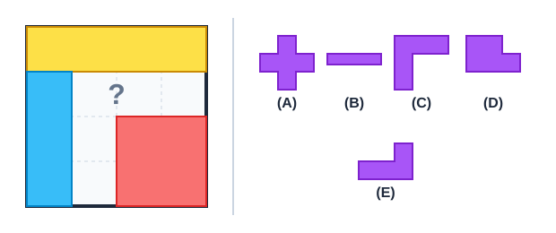

Autoavaliação 2.1.1. O Mosaico do Brasão.
- Peça A (Cruz de 5 quadradinhos)
- Incorreto. A cruz requer reentrâncias nos quatro lados, mas o vão do quadro possui bordas retas adjacentes.
- Peça B (Barra reta de 1 x 5)
- Incorreto. A barra reta não consegue preencher o canto interno de 90 graus deixado pelas outras peças.
- Peça C (Pentaminó em formato de L)
- Correto! O espaço livre é exatamente uma região em L com 5 quadradinhos conectando o ramo horizontal e o vertical.
- Peça D (Bloco 2 x 2 com uma extensão)
- Incorreto. Essa peça sobreporia a placa vermelha ou a placa amarela.
- Peça E (Formato de escada)
- Incorreto. O vão a ser preenchido não possui bordas em degraus.
Quatro placas poligonais de madeira encaixam-se perfeitamente para formar um quadrado sem sobreposições. Três dessas placas já foram colocadas no quadro: uma placa amarela ocupa a borda superior (área 4), uma placa azul ocupa a lateral esquerda (área 3) e uma placa vermelha ocupa o canto inferior direito (área 4).

Qual das peças abaixo deve ser colocada no espaço com a interrogação (?) para completar o quadrado sem sobrar vãos?
Dica 1.
Dica 2.
Solução.
Pista 1 (Pista Leve): Conte quantos quadradinhos de 1 x 1 faltam para preencher o quadro 4 x 4 (área total 16). Depois observe a geometria do espaço em branco: ele faz uma curva ou é reto?
Pista 2 (Pista Forte): As peças já colocadas somam área 4 + 3 + 4 = 11. O espaço que falta tem área 16 - 11 = 5 e consiste em 3 quadradinhos alinhados na horizontal conectados a 3 na vertical compartilhando o canto (uma forma de 'L').
1. Análise da Área Total e Restante:
O quadro completo é um quadrado de dimensões \(4 \times 4\text{,}\) totalizando uma área de \(16\) quadradinhos unitários. As três peças já fixadas possuem as seguintes áreas:
- Placa amarela superior: \(1 \times 4 = 4\) quadradinhos.
- Placa azul lateral esquerda: \(3 \times 1 = 3\) quadradinhos.
- Placa vermelha inferior direita: \(2 \times 2 = 4\) quadradinhos.
A soma das áreas ocupadas é \(4 + 3 + 4 = 11\text{.}\) Logo, a peça que falta precisa ter exatamente área igual a \(16 - 11 = 5\) unidades.
2. Análise Geométrica do Contorno:
As coordenadas das casas vazias no quadro são: linha 2 colunas 2, 3 e 4; e linha 3 coluna 2; linha 4 coluna 2. Essa disposição forma dois segmentos de comprimento 3 que se encontram em ângulo reto na casa (2,2), configurando precisamente o pentaminó em 'L'. Portanto, a única peça que se ajusta perfeitamente sem sobreposições é a Peça C.